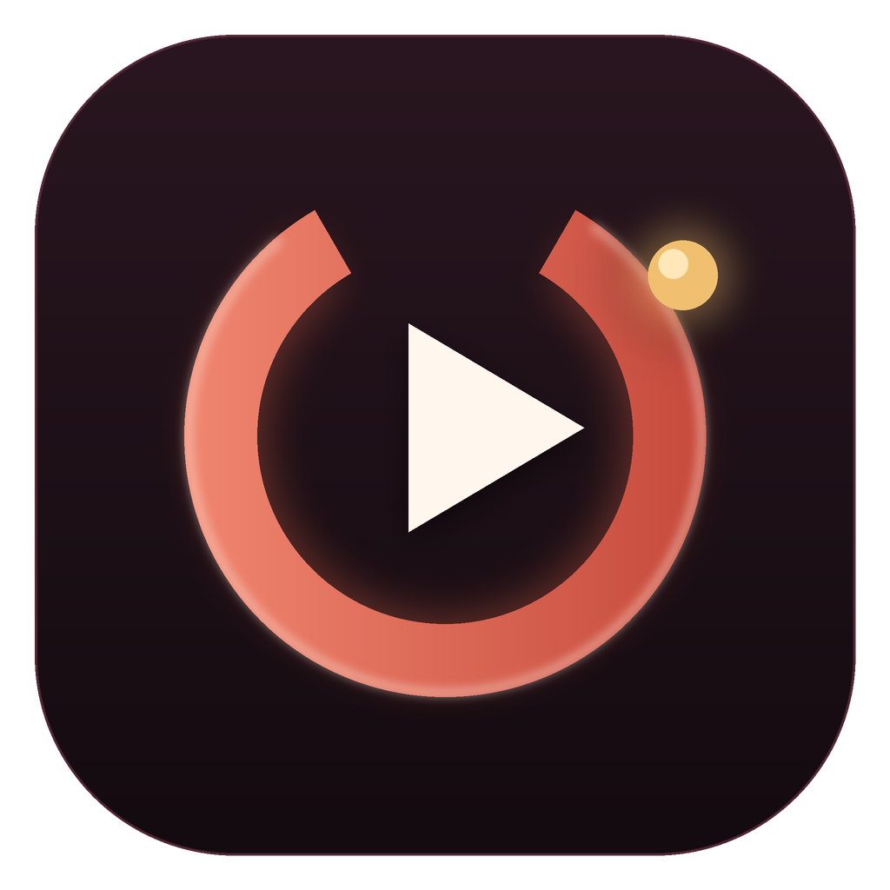

User guide — Windows desktop application
Version 1.0.0 · 2026-11-08
This guide covers the complete Windows application, from first launch to a repeatable weekly research routine. The repository documentation is English; the v1.0 interface is French. French labels are shown in bold with an English explanation.
Outly answers four questions:
It is a local research tool, not an automation bot. It does not upload videos, post comments, subscribe, or manipulate a YouTube account. It reads public data through the official API and, only with your consent, private Studio analytics for your own channel.
Use release/Outly.exe in its own writable folder, or follow
INSTALL.md to run from source. Do not put the app in a protected
folder such as Program Files; if the folder is read-only, Outly falls back to
%LOCALAPPDATA%\Outly.
On first launch the app creates:
config.yaml — budgets, filters, output, email;positioning.md — who you serve and what makes your channel different;seeds.txt — competitors you already know;keywords.txt — phrases your audience searches;.env — API keys (initially empty placeholders).python -m outly init does the same from a terminal and never overwrites an
existing file.
Open Réglages -> Clés & modèle (Settings -> Keys & model) or edit
.env:
YOUTUBE_API_KEY=...
LLM_BASE_URL=https://generativelanguage.googleapis.com/v1beta/openai/
LLM_MODEL=gemini-3.5-flash-lite
LLM_API_KEY=...
Use python -m outly doctor --offline for a local check. Use
python -m outly doctor --probe for one real YouTube call and a model listing.
The probe consumes a small amount of quota; the offline check does not.
positioning.md is sent to the LLM for every channel. A useful file names:
Vague positioning produces vague scores. This is the highest-leverage file in the project.
seeds.txt accepts @handle, a full @handle URL, /channel/UC..., a raw
UC... ID, or /user/old-name. Custom /c/... URLs are not resolvable by the
API; convert them first.
keywords.txt contains one search expression per line. Ten to twenty good
phrases are enough. Each line costs one search.list call; the international
pass doubles that.
The left navigation has four groups:
| French group | English meaning |
|---|---|
| Pilotage | Steering |
| Analyse | Analysis |
| Bibliothèque | Library |
| Configuration | Settings |
Pages that belong together share tabs. The app remembers the last tab and the last page when configured to do so.
| French page | English name | Main job |
|---|---|---|
| Accueil | Home | Readiness, quota, run, Studio summary |
| Audit | Audit | Full channel diagnosis and 30-day strategy |
| Stratégie | Strategy | Diagnose recent videos and plan tests |
| Studio YouTube | YouTube Studio | Long videos, Shorts, other content, competitors |
| Plan éditorial | Editorial plan | Upcoming videos, stages, tasks, production estimates |
| Schémas vidéo | Video schematics | Shot list, framing, text placement, timeline |
| Chaînes | Channels | Sortable candidate table and detail panel |
| Comparateur | Comparison | Two or three channels side by side |
| À regarder | Watchlist | Local saved videos and channels |
| Notes | Notes | Personal library with versions and ratings |
| Tableau blanc | Whiteboard | Infinite canvas with shapes and freehand drawing |
| Recherche | Research | Wikipedia-only or Wikipedia + Exa brief |
| Idées | Ideas | Video concepts with three distinct titles |
| Hooks | Hooks | Opening variants based on outlier intros |
| Cerveau IA | AI brain | Connect notes, research, ideas, and outliers |
| Mon contenu | My content | Edit positioning, seeds, keywords, my channel |
| Clés & modèle | Keys & model | Provider selection and live test |
| Réglages | Settings | Appearance, budgets, filters, LLM rate |
| Rapports e-mail | Email reports | Recipient, frequency, test, Windows task |
| Lancer | Launch | Options, estimate, live log, quota delta |
The header has an Organiser (Arrange) control on pages with cards. Use the arrows to reorder blocks and the horizontal arrow to move a block between two columns. Réinitialiser cette page restores the original layout. These preferences are local and do not change research data.
The home page is the pre-flight checklist. It shows whether the configuration, keys, positioning, seeds, and keywords are ready; the two quota gauges; a summary of the last Studio refresh; and a Lancer button for a full run. If a required file is missing, fix it here before launching. The run estimate is a range, not a guarantee: cache hits and API errors change the cost.
Edit positioning.md, seeds.txt, and keywords.txt without leaving the app.
The Ma chaîne field writes moi.chaine; the international toggle writes
moi.recherche_internationale. The page can import Markdown, text, JSON, HTML,
OpenDocument, and PDF. Extracted text is previewed and only written on
Ctrl+S. Short bullet lines become seeds or keywords; a paragraph is never
turned into a keyword. Scanned, password-protected, or textless PDFs are
rejected with a clear explanation. Position text sent to the LLM is capped, but
the file keeps the full text.
Select Gemini, Groq, Mistral, Ollama Cloud, or Ollama local. The provider selector pre-fills the base URL and a model name. Keys are masked. Tester makes a real call, so it costs a small amount of quota/credit. The fallback LLM is optional. API keys never appear in reports or logs.
Apparence & confort controls theme, table text size, shadows, delete
confirmation, and whether to reopen the last page. Preferences live in
data/preferences.json. The rest of the page edits budgets, subscriber/age
filters, Shorts cutoff, LLM rate, cache TTL, output format, and email schedule;
comments in config.yaml are preserved. Invalid combinations (minimum
subscribers above maximum, run budget above daily budget) are refused before a
write.
Choose optional outlier analysis and transcript reading, review the estimated duration, then start. The log streams in real time. Buttons are disabled while a task runs; the app records the quota delta at the end. A clean quota stop is not a crash: the report may be partial. You can close the window, but a running child process may continue briefly; reopen and inspect the log rather than starting a second run immediately.
The table shows retained channels in bold with a filled marker and rejected channels with an open marker. Filter Toutes / Retenues / Écartées (All / Retained / Rejected), sort by any column, and select a row for details: description, score, audience, cadence, medians, best outliers, thumbnails, and links. The detail panel can save a channel to the watchlist. Rejected channels keep the reason they were rejected; this is deliberate, so the result can be audited rather than treated as magic.
Compare two or three channels side by side: score, audience, medians, cadence, formats, language, best outlier, and a local follow priority score from 0 to 100. The priority card explains its weights: proximity 35%, outlier 25%, cadence 15%, freshness 10%, audience 15%. It is a local heuristic, not an LLM answer, and it makes no network call.
Four tabs:
liveStreamingDetails, plus an explicit explanation of API limits for posts,
polls, and questionnaires;The competitor curve is reconstructed from current view counts. It is not a
daily history; YouTube only provides daily history for your own channel. The
Ma chaîne YouTube block is hidden in the competitor tab. Private metrics
require OAuth from the channel owner. Follow the four-step guide on the page
and guides/youtube-studio.md. Analytics can lag
24-48 hours, and Google may refuse impressions; the page explains missing data
rather than inventing it.
The audit combines your channel's measured profile, the ten closest competitors, notes, keywords, seeds, watchlist, positioning, and the last AI brain analysis. It produces:
With a YouTube key, the audit first refreshes your own channel. It never moves
your channel into the competitor pool. --sans-recuperation skips the refresh.
An identical audit is cached; --force regenerates it.
The strategy page diagnoses recent videos from the Studio cache, or from public videos when Studio is unavailable. Local rules flag views below the median, low CTR, low retention, early drop-off, and long titles. With an LLM, each finding gets plausible causes and a test. Voice and editing are not measured by YouTube Analytics, so they remain labeled as hypotheses. The result is cached by fingerprint.
Create upcoming videos with title, planned date, stage (idea, script, shoot, edit, published), format, and notes. Overdue and near dates are highlighted. Each card has its own checklist; tasks can be added, counted, and removed. Estimer la production estimates time per phase, gear with quantities, footage, budget, and a checklist. Without an LLM, a local estimate by format is used and labeled as such.
Build the structure of a Short or a long video: shot type, framing, face-camera presence, text placement, a reorderable timeline, and a checklist. It is a local planning surface, not a renderer.
Hooks read timestamped transcripts of outlier videos, ask the LLM where the
intro starts and ends, and write opening variants for a chosen subject. Each
variant names the technique and the source outlier. Without transcripts the
command stops rather than inventing quotes. Active notes can influence the
variants. Noter saves a variant as a note. --force regenerates; intro
analyses are reused.
The AI brain reads active notes, research briefs, generated ideas, the editorial plan, the watchlist, positioning, hooks, and recent outliers. It returns a synthesis, angles, possible titles, questions, and non-obvious connections, plus a 3D map of related points. Higher-rated notes and watchlist items are treated as stronger context. Archived notes are excluded by default. The page shows the material it read, so the input is visible rather than assumed. Research facts marked "to verify" are never presented as established.
Ideas use rated notes, positioning, keywords and seeds, competitor keywords, best outliers, watchlist items, and the last AI brain result. Each idea includes a sourced reason and exactly three titles with different angles: demonstration, counter-intuition, investigation, mistake to avoid, guide, or story. Two titles that reformulate the same promise do not count. From the UI a title can be copied or sent to the editorial plan; Créer une note keeps the whole idea.
Enter a title and keywords. Sans IA (No AI) queries the MediaWiki API only;
it needs no LLM or Exa key. Avec IA (With AI) asks the LLM for viewer intent
and verification queries, reads Wikipedia, queries Exa, and builds a sourced
brief. A claim is marked recoupé (cross-checked) only when at least three
independent recognized web domains support it. Wikipedia is a starting point
and does not count as one of the three. Below that threshold, the claim is
marked à vérifier (to verify). Unsupported claims are removed; disagreements
are preserved. Identical briefs are cached; --force regenerates.
An infinite local canvas with pen, sticky notes, text, arrows, twelve colors, a
pointer eraser that actually cuts strokes, and ten geometric shapes in addition
to rectangle and ellipse. Undo and redo use Ctrl+Z / Ctrl+Y. Right-click
zooms and pans. The board saves locally to data/tableau-blanc.json; keep a
copy before experimenting with a large board.
Notes have a title, body, type (hook, concept, topic, idea, reference, note), status (draft, to test, validated, archived), tags, source, pin, and a rating from 0 to 10 or "not rated". Search covers title, body, tags, and source. Saving happens after a typing pause; content changes create restorable versions in Historique (History). Ratings drive the priority of context sent to the AI brain. Archived notes are excluded by default.
A local playlist of saved videos and channels with a rating, a browser link, and a remove action. It feeds the AI brain and ideas. It is not a YouTube playlist; nothing is written to your YouTube account.
Avoid rerunning everything because a button exists. Cache hits are cheap, but LLM calls and analysis still take time.
python -m outly quota shows two counters for the current Pacific day. A run
stops cleanly at the configured budget; exit code 3 means partial data, not a
crash. out/channels.csv, out/outliers.csv, and out/report.md are written
atomically. CSV uses ; and a UTF-8 BOM by default for French Excel. Change
output.csv_separator for , and keep the encoding if you need accents.
Email reports are optional. The sender is fixed by the app; only the recipient
and schedule are configurable. Create a Gmail app password, put it in .env as
SMTP_PASSWORD, and use Envoyer un test (Send a test) before scheduling.
The Windows task wakes daily and mail --si-du decides whether the chosen
frequency is due. A missed slot is caught up once, not once per missed day.
No empty report is sent. Attachments have size caps and the body says when one
was omitted.
Back up with SQLite's backup API while the app is closed or between runs:
import sqlite3
from pathlib import Path
source = Path("data/radar.sqlite3")
target = Path("backup/radar-copy.sqlite3")
target.parent.mkdir(parents=True, exist_ok=True)
with sqlite3.connect(source) as src, sqlite3.connect(target) as dst:
src.backup(dst)
Then open the copy and run PRAGMA quick_check; it should return ok. A plain
file copy during a write can be inconsistent. To restore, close Outly, keep the
current database under a dated name, put the verified backup in place, and run
doctor --offline.
To update, keep config.yaml, .env, positioning.md, seeds.txt,
keywords.txt, and data/; replace only the application files. Database
migrations are additive, but a backup before a major version is still wise.
| French | English |
|---|---|
| Retenues / Écartées | Retained / Rejected |
| Toutes | All |
| Ma chaîne | My channel |
| Recherche internationale | International search |
| Clés & modèle | Keys & model |
| Apparence & confort | Appearance & comfort |
| Enregistrer | Save |
| Tester | Test |
| Lancer | Launch |
| Durée estimée | Estimated duration |
| Journal | Log |
| Quota du jour | Today's quota |
| Actualiser | Refresh |
| Connecter ma chaîne | Connect my channel |
| Envoyer un test | Send a test |
| Programmer sur ce PC | Schedule on this PC |
| À vérifier | To verify |
| Recoupé | Cross-checked |
| Sans IA / Avec IA | No AI / With AI |
search.list produces noise; the score is a filter, not truth.For failures and recovery, see TROUBLESHOOTING.md. For every command and option, see CLI_REFERENCE.md.